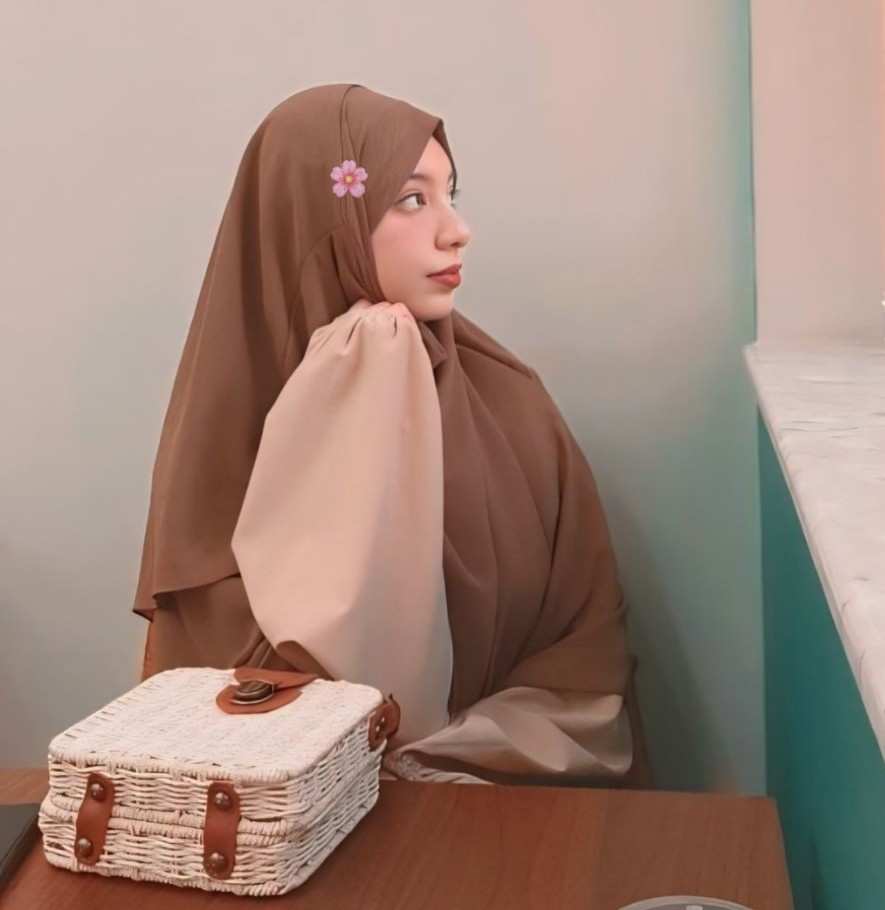

Web developer & infographic designer crafting clean, modern interfaces and bold visuals that bring ideas to life. With a strong focus on responsive design, user experience, and performance, I build websites and applications that not only look great but also work seamlessly across devices. Beyond coding, I create impactful infographics and visual content that simplify complex information and engage audiences. Passionate about blending design and technology, I aim to deliver digital experiences that are both functional and memorable.

I help startups and brands with design-driven development.
Responsive websites with modern stacks (React, Tailwind).
Wireframes, prototypes, and pixel-perfect interfaces.
Logos, brand kits, and data visuals that pop.
A few things I’m proud of.

Flutter, Firebase, Figma

Next.js, Tailwind

React, Charts
I’m Amani, a web developer and infographic designer based in Algeria. I specialize in blending creativity with code to craft user-friendly, modern, and visually striking products. My work spans from elegant portfolio websites to full-scale web applications.
I have experience with React, Next.js, TailwindCSS, Flutter, and design tools like Figma & Illustrator. I thrive in projects where I can merge design thinking with technical development to deliver both aesthetics and functionality.
Beyond development, I enjoy experimenting with typography, colors, and infographics to communicate ideas in powerful and memorable ways. My goal is to always create digital experiences that are intuitive, inclusive, and inspiring.
I’ve interned at Algérie Télécom and Sonelgaz, and I’m currently building Halwaty, a platform connecting traditional sweet makers with clients.
Tell me about your idea. I usually reply within 24 hours.
📧 amaniuwu12@gmail.com
📞 +213 795425280
📍 Algeria (Remote-friendly)